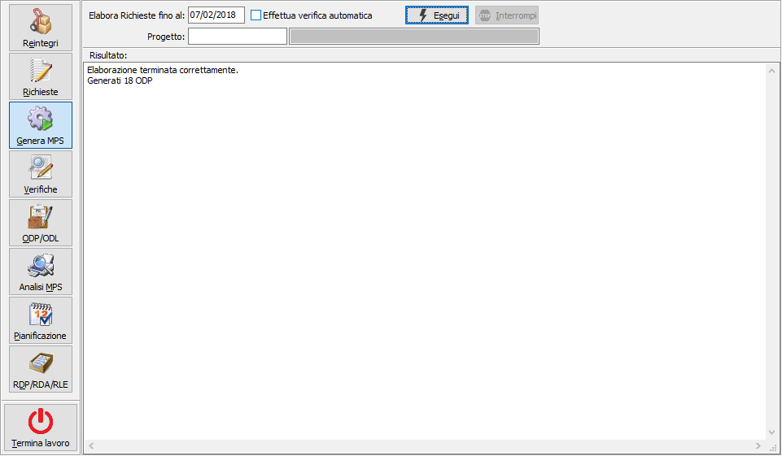

Generazione piano
La generazione del piano di produzione si basa sul concetto della capacità finita sui materiali e della capacità infinita sulle risorse.
Scopi della generazione del piano sono:
coprire tutti i fabbisogni di componenti; per le materie prime attraverso l’emissione di RDA e dei successivi ordini a fornitori, per i composti attraverso la generazione degli ODP (e dei relativi ODL)
determinare a partire dalla data di consegna richiesta ed in base ai tempi di produzione:
le date teoriche di inizio e fine produzione dell’ODP
le date teoriche di inizio e fine produzione di ogni singolo ODL
le date teoriche di approvvigionamento (per materie prime acquistate e semilavorati prodotti) tenendo conto che il componente utilizzato in una determinata fase deve essere disponibile alla data di inizio produzione dell’ODL in cui viene utilizzato. Nel caso di semilavorati prodotti viene considerato il tempo di produzione legato al ciclo, mentre per le materie prime viene considerato il tempo di approvvigionamento indicato in anagrafica articoli.
Viene proposta la data di fine elaborazione basandosi sui giorni presenti in configurazione e si può selezionare la casella per effettuare automaticamente, al termine della generazione, la fase di verifica piano. Durante la fase di elaborazione è possibile interrompere in qualsiasi momento con l'apposito pulsante che si abilita automaticamente, l'interruzione è sottoposta a richiesta di conferma.
Se presente la gestione progetti sarà possibile specificare il progetto, che sarà utilizzato come filtro per la generazione.

Le RDP vengono raggruppate secondo le regole previste a livello di unità produttiva, anagrafica prodotto e anagrafica cliente generando gli ODP da produrre.
Gli ODP vengono comunque generati sul magazzino di default prodotti finiti o semilavorati (in base al tipo di ODP che si sta creando) indicati sull’unità produttiva.
Gli ODP generati vengono nettificati (solo per la parte derivate da ordini); è possibile che un ODP quindi non venga comunque prodotto in quanto la disponibilità di magazzino è sufficiente a coprire l’ODP. In questo caso comunque l’ODP risulta automaticamente evaso pur non dando origine a nessun ODL.
Se è stata attivata l’opzione “Reintegro scorte PF in generazione piano” per i prodotti finiti la quantità da produrre del primo ODP del prodotto viene aumentata della quantità necessaria per reintegrare la scorta. Se è stata attivata l’opzione “Reintegro scorte SL in generazione piano” per i semilavorati derivanti dai prodotti finiti la quantità da produrre del primo ODP del prodotto viene aumentata della quantità necessaria per reintegrare la scorta. La quantità così determinata dell’ODP è infine modificata in funzione della quantità minima di produzione e del lotto di produzione; la quantità dell’ODP non sarà quindi inferiore alla quantità minima e sarà un multiplo del lotto di produzione.
Gli ODP generati vengono esplosi sulla base del ciclo di produzione previsto sulla scheda tecnica e per ogni fase viene generato un ODL; collegato al singolo ODL viene generato l’elenco dei componenti che dovranno essere utilizzati. L’impegno dei componenti è alla data di previsto utilizzo (quindi alla data di inizio fase); la data di consegna richiesta al fornitore tiene conto della data di previsto utilizzo e dei tempi di riordino. Per i semilavorati presenti all’interno dell’elenco componenti viene effettuata la generazione degli ODP, tenendo conto dei raggruppamenti previsti.
Gli ODP relativi ai semilavorati vengono nettificati (ad eccezione di quelli derivanti da reintegro o correttivo).
Lo stato degli ODP e degli ODL generati viene impostato a “Provvisorio”; fino a che l’ODP non viene pianificato (attraverso l’apposita funzione) ogni volta che viene lanciata la generazione del piano tutti gli ODP (e gli ODL collegati) provvisori vengono eliminati per essere rigenerati. Anche i movimenti di ordinato a produzione dei composti e di impegnato da produzione dei componenti derivanti da ODP/ODL provvisori sono considerati provvisori e non sono visibili al resto dell’applicazione.